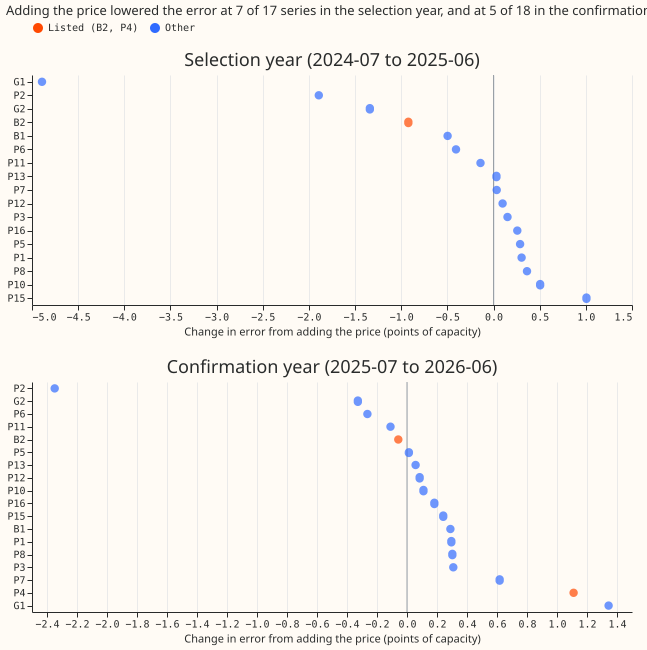

Does the lagged electricity price help the demand model at substations with batteries?
We asked whether the electricity price from 7 days earlier helps predict demand at substations that host a battery, whose charging may follow the price. We added that price to a weather-to-power demand model and compared its error with the same model without it, on the substation hosting the largest battery and on 16 other series, in a selection year and a confirmation year. The price lowered the error in the selection year, but the gain disappeared in the confirmation year, so the experiment cannot support the idea that batteries respond to the price.
Verdict: inconclusive. Adding the electricity price published by Elexon (the electricity market operator for Great Britain) from 7 days earlier did not lower the error of the stage 1a demand model at the substation hosting the largest battery (B2) with an interval that excludes zero, and the gain seen in the selection year disappeared in the confirmation year. The pre-registered mechanism test (C4) failed in the selection year and pointed the wrong way in the confirmation year, so the experiment cannot support a price response by batteries. Stage 1a is an XGBoost model per series that turns weather into power.
Absolute scores. The arms are BASE (the demand model without the price), PRICE (BASE plus the price from 7 days earlier), CONTROL (BASE plus three columns that contain no price), and SHUFFLED (BASE plus the price from a different week). The scores are the mean absolute error of the median in points of capacity (1 point is 1% of a series' effective capacity), averaged over 3 random seeds:
| Scope and year | BASE | PRICE | CONTROL | SHUFFLED |
|---|---|---|---|---|
| B2, selection | 10.98 | 10.05 | 10.91 | 10.21 |
| Other series (16), selection | 9.79 | 9.40 | 9.78 | 9.47 |
| Primary, selection | 6.97 | 7.01 | 7.03 | 7.04 |
| B2, confirmation | 10.12 | 10.06 | 9.89 | 10.09 |
| P4, confirmation | 4.22 | 5.33 | 4.16 | 4.42 |
| Other series (16), confirmation | 9.35 | 9.41 | 9.13 | 9.29 |
| Primary, confirmation | 7.11 | 7.15 | 6.92 | 7.04 |


What the contrasts say
- C1, price against base, B2: -0.92 (-2.10 to +0.07) in the selection year, so not material (the interval includes zero). In the confirmation year -0.06 (-0.38 to +0.23).
- C2, price against demand and wind, B2: -0.86 (-2.10 to +0.21) in the selection year, so not material, and +0.18 (-0.08 to +0.41) in the confirmation year.
- C3, price against shuffled price, B2: -0.16 (-0.53 to +0.17). The shuffled price reproduced about five sixths (0.77 of 0.92 points) of the selection-year gain at B2, and C1's own interval includes zero, so the gain is not evidence of a price effect. The CONTROL arm, with the same lag and column count, gained only 0.07 points at B2, so the experiment does not show why the shuffled price matched the real price.
- Confirmation year, listed series pooled (B2 and P4): C1 is +0.53 (+0.14 to +1.27), C2 is +0.67 (+0.20 to +1.49), and C3 is +0.44 (-0.04 to +1.33). The pooled C1 interval excludes the selection-year estimate of -0.92, so the decision rule's confirmation clause makes the verdict inconclusive.
- The prediction's second clause failed. The price lowered the selection-year error at the other series by 0.38 points (-0.77 to +0.07), against a predicted gain below 0.1.
- C4, gain at the listed series minus gain at the others: -0.55 (-1.43 to +0.20) in the selection year, and +0.47 (+0.06 to +0.91) in the confirmation year, where the listed series got worse by more than the others.
- The gain was concentrated at the series with the largest errors, not at the listed series. In the selection year the largest gains were at G1 (-4.89), P2 (-1.89), and G2 (-1.34). In the confirmation year G1 got worse by +1.34 while P2 still gained -2.35.
Failures and deviations
- P4 could not be fitted in the selection year, because it has only 14,615 half-hours of training data before the purge, under the 17,520 the fit requires. The listed group in the selection year is B2 alone. P4 was fitted in the confirmation year, and the price made it worse by +1.11 (+0.23 to +2.85). Two further series have too little history in both years, so 17 series were fitted in the selection year and 18 in the confirmation year, not 20.
- No month-by-half-hour climatology row was scored, which the
ml-experimentskill asks for. - The refuted branch of the decision rule was unreachable, as the power check predicted.
- No Opus review was run. Sonnet reviewed the plan, the code, and this write-up, as the brief asked. The code review found that the shuffled arm read prices from later weeks; that was fixed before any fit.
Lessons
A price taken from another week matched most of the selection-year gain at B2, and the gain did not repeat. The gain at B2 and the larger gains at G1 and P2 in the selection year are not evidence of a price effect, because intervals include zero and the confirmation year reversed G1. The advice list in the front matter carries the actions.
Why the price, and why only a lag
Future prices are hard to predict, so the inputs are prices already published. A battery that charges when the price is low and discharges when it is high moves a substation's demand by an amount the weather and the clock do not explain. The stage 1a demand model sees this only if it is given the price. The price at the same half-hour 7 days earlier is published well before any forecast issue time, so it exists at forecast time for every lead up to 7 days.
Price source
The price is the APXMIDP provider's price in Elexon's Market Index Data. The data pull is in
data/ml-experiments/00010-elexon-price-lags-stage1a-demand/prices/ and its README.md is the
lineage note. Findings, all from e00010_fetch_prices.py:
- Cost and licence: the Elexon Insights API needs no key and no payment. The script accepts no licence in anyone's name.
- Coverage: 134,357 of 136,416 half-hours (98.5%) from 2019-01-01 to 2026-10-12. 36 whole days are empty, all between 2019-01-09 and 2021-04-28. 54 more days are partial, 45 of them before 2021-06. From 2024-04-14 the series is complete.
- Product mix: the other provider,
N2EXMIDP, reports volume 0 in all but 385 of its 134,249 rows, so onlyAPXMIDPis usable. The API does not say which products feed theAPXMIDPindex. The plan therefore calls it the EPEX short-term half-hourly index, asstudies/market_downloadsdoes, and does not claim it is the day-ahead price. - Zero volume: 175
APXMIDProws report volume 0 (64 in 2019, 50 in 2021, 18 in 2022, 15 in 2023, 11 in 2025, 12 in 2026, 5 in 2020). The experiment sets the price on those rows to missing. - Values: -102.92 to 1,983.66 GBP per MWh, the maximum on 2021-09-09. No nulls, and the longest run of an unchanged price is 30 half-hours.
The CONTROL columns need a second pull. The demand outturn and fuel-mix downloads already in
data/studies/downloads/market/ cover only 2025-09 to 2026-09, so the same free Insights API
pull was repeated for 2019 to 2026 with the same validation.
Training years with missing prices are not dropped. XGBoost handles a missing value natively.
price_lag7d is missing when its half-hour is missing or has zero volume. The minimum and maximum
are missing when fewer than 40 of the 48 half-hours are available. About 23 half-hours in the
validation and confirmation years have a zero-volume price, so a few rows there carry missing
price columns; the report counts them. No lead beyond 7 days is scored.
Design
The base is experiment 00006's Primary input set: the weather block (ERA5, read at the series' nearest grid cell), hour and weekday, the COVID indicator, and the days to Christmas inside a 14-day window, trained with recency weights (half-life 2 years). Folds, XGBoost settings (no column subsampling), seeds, and the 7-day purge are those of 00006.
| Arm | Adds to BASE |
|---|---|
| BASE | nothing |
| PRICE | price_lag7d (price at the same half-hour 7 days earlier), price_min_lag7d and price_max_lag7d (the minimum and maximum over the 48 half-hours ending at the valid time minus 7 days, so nothing post-dates the valid time minus 7 days) |
| CONTROL | three columns with no price in them, matching PRICE's count: GB national demand outturn (Elexon INDO) at the same half-hour 7 days earlier, wind generation (Elexon FUELHH) at the same half-hour 7 days earlier, and the range of demand minus wind over the 48 half-hours ending 7 days earlier |
| SHUFFLED | the three PRICE columns, all taken from one other week of the same weekday and half-hour, drawn with a fixed seed from 1 to 4 weeks further back than the true lag (a negative control) |
Weather and timing caveat. The weather block is ERA5 read at the valid time, as in 00006, so every score is a ceiling for the same reason 00005's was: ERA5 arrives about 5 days late. The columns this experiment adds are available at forecast time because they are at least 7 days old.
Calendar memorisation control. Hour and weekday are in BASE (as in 00006), so the price columns can stand in for the calendar. SHUFFLED keeps the calendar structure and removes the price's information, and it is the control for that.
Planned contrasts
All are differences in mean absolute error of the median, in points of capacity, over the selection year (2024-07 to 2025-06) and then, once, the confirmation year (2025-07 to 2026-06), with a month-resampled interval at the 98.3% level that the decision rule sets.
- C1: PRICE − BASE.
- C2: PRICE − CONTROL (what the price adds beyond national demand and wind).
- C3: PRICE − SHUFFLED (what the price adds beyond the calendar structure of the price columns).
- C4: the gain PRICE − BASE at the two listed series minus the gain at the other fitted series (16 in each year), with the months resampled (a verdict contrast, as the decision rule says).
The listed substations, chosen before any fit
The list comes from NGED's Embedded Capacity Register (August 2026 release), which is independent of the outcome. A series is listed if the register's connected storage rows under the series' name sum to a maximum export capacity of at least 5% of the series' effective capacity. The 5% threshold is a round number chosen before the sums were run; P4 passed it by 0.1 points, which is why the plan reports it only beside B2. The register has no commissioning dates, so a listed battery may have been absent for part of the training years or of the selection year, and batteries also earn from balancing and frequency response, not only the index price. A gain at B2 is therefore weak evidence of a battery response. The register names the primary, bulk supply point, and grid supply point each row connects to. The result for the 20 series 00006 scored:
- Listed: B2, a bulk supply point, with 9.5 MW of connected storage against 47.6 MW of effective capacity (20%).
- Listed: P4, a primary, with 0.37 MW of connected storage against 7.1 MW (5.1%, just over the threshold).
- Not listed: the two grid supply points (10.5 MW of connected storage against 384 MW, and 7.4 against 171 MW, under 5%), the other bulk supply point (0.75 against 55 MW), and the other 15 primaries (at most 0.19 MW each, against 3 to 18 MW).
The listed group has two members, one of them with a 0.37 MW battery, so the mechanism cannot be tested well with this series set. C4 compares two listed series with the rest. The verdict therefore needs C4, and the register in the embedded-battery and unmetered-battery studies adds no further series: the unmetered-battery study's screen found no battery at any of its eight primaries, including the two the register lists with connected storage, so no other series can be named from data independent of the outcome. P4's battery is 0.37 MW. The advice for a later experiment is to repeat the test on a series set with more battery sites. No series is added after seeing results.
Power check, run before any fit
B2's 98.3% interval will be about 0.3 to 0.4 points wide on each side, so the refuted branch
cannot be reached. The check resampled the 12 validation months of one seed of two close arms from
experiment 00006's stored fits at B2 (the clock-only arm against the clock, COVID indicator, and
days-to-Christmas arm), a difference of typical size. The half-width was 0.40 points, and 0.30 for
a larger difference. The decision rule therefore applies: the refuted branch is dropped, and
the verdict is supported or inconclusive. A gain at B2 needs to be about 0.4 points or more to
be material.
Resources and sizing
Sizing, one line per plan-issue trigger. Stores: only private predictions and a price
parquet, no production table. Serving path: not touched. Degradation rule: not touched, but a
production port would need one (price missing means the columns go missing, which XGBoost handles).
More than one defensible design: yes (which price, which lags), so the plan fixes them here.
Code whose callers could not be named without searching: no. This is medium.
Resources. The fits ran on 8 CPU cores, one thread per fit, with no GPU: the 00006 per-series fits for four arms on two folds and three seeds. Sonnet reviewed the plan, the code, and the write-up.
Earlier advice. Follows the experiment 00006 advice to use its Primary set and recency weights. Departs from none of it.